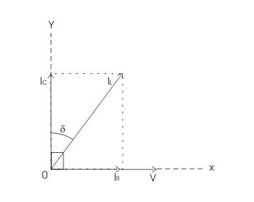
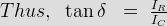
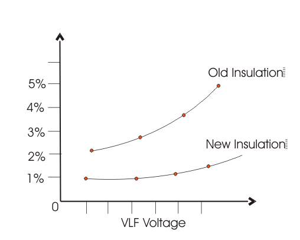

Method of Tan Delta Testing
Reason of applying Very Low Frequency
How to predict the Result of Tan Delta Testing
Principle of Tan Delta Test
A pure insulator when is connected across line and earth, it behaves as a capacitor. In an ideal insulator, as the insulating material which acts as dielectric too, is 100 % pure, the electric current passing through the insulator, only have capacitive component. There is no resistive component of the current, flowing from line to earth through insulator as in ideal insulating material, there is zero percent impurity.
In pure capacitor, the capacitive electric current leads the applied voltage by 90°.
In practice, the insulator cannot be made 100% pure. Also due to ageing of insulator the impurities like, dirt and moisture enter into it. These impurities provide conductive path to the current. Consequently, leakage electric current flowing from line earth through insulator has also resistive component.
Hence, it is needless to say that, for good insulator, this resistive component of leakage electric current is quite low. In other way the healthiness of an electrical insulator can be determined by ratio of resistive component to capacitive component. For good insulator this ratio would be quite low. This ratio is commonly known as tanδ or tan delta. Sometimes it is also referred as dissipation factor.

In the vector diagram above, the system voltage is drawn along x-axis. Conductive electric current i.e. resistive component of leakage current, IR will also be along x-axis.
As the capacitive component of leakage electric current IC leads system voltage by 90°, it will be drawn along y-axis.
Now, total leakage electric current IL(Ic + IR) makes an angle δ (say) with y-axis.
Now, from the diagram above, it is cleared, the ratio, IR to IC is nothing but tanδ or tan delta.

NB: This δ angle is known as loss angle.
Method of Tan Delta Testing
The cable, winding, current transformer, potential transformer, transformer bushing, on which tan delta test or dissipation factor test to be conducted, is first isolated from the system. A very low frequency test voltage is applied across the equipment whose insulation to be tested. First the normal voltage is applied. If the value of tan delta appears good enough, the applied voltage is raised to 1.5 to 2 times of normal voltage, of the equipment. The tan delta controller unit takes measurement of tan delta values. A loss angle analyser is connected with tan delta measuring unit to compare the tan delta values at normal voltage and higher voltages, and analyse the results.
During test it is essential to apply test voltage at very low frequency.
Reason of applying Very Low Frequency
If frequency of applied voltage is high, then capacitive reactance of the insulator becomes low, hence capacitive component of electric current is high. The resistive component is nearly fixed, it depends upon applied voltage and conductivity of the insulator. At high frequency as capacitive current, is large, hence, the amplitude of vector sum of capacitive and resistive components of electric current becomes large too.
Therefore, required apparent power for tan delta test would become high enough which is not practical. So to keep the power requirement for this dissipation factor test, very low frequency test voltage is required. The frequency range for tan delta test is generally from 0.1 to 0.01 Hz depending upon size and nature of insulation.
There is another reason for which it is essential to keep the input frequency of the test as low as possible.
As we know,

That means, dissipation factor tanδ ∝ 1 / f.
Hence, at low frequency, the tan delta number is high, the measurement becomes easier.
How to predict the Result of Tan Delta Testing
There are two ways to predict the condition of an insulation system during tan delta or dissipation factor test.
First one is, comparing the results of previous tests to determine, the deterioration of the condition of insulation due ageing affect.
Second one is, determining the condition of insulation from the value of tanδ, directly. No requirement of comparing previous results of tan delta test.
If the insulation is perfect, the loss factor will be approximately same for all range of test voltages. But if the insulation is not good enough, the value of tan delta increases in higher range of test voltage.

From the graph it is clear that, the tan&delta number non linearly increases with increasing test very low frequency voltage. The increasing tan&delta, means, high resistive electric current component, in the insulation. These results can be compared with the results of previously tested insulators, to take proper decision whether the equipment would be replaced or not.
 by
by